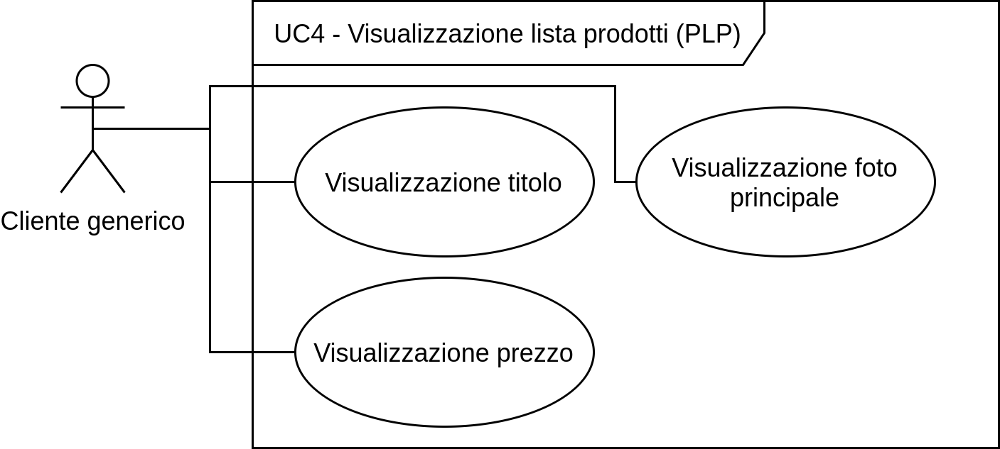

# SWException ### Corso di Ingegneria del Software Università degli Studi di Padova A.A. 2020/2021 Laurea triennale in informatica --- ## Aggiornamento della documentazione ### Analisi dei requisiti - Maggiore dettaglio - Aggiunta di diagrammi per aumentare la fruibilità dei contenuti  note: Maggiore dettaglio nei casi d'uso per la visualizzazione degli elementi. ### Piano di qualifica <!-- TODO --> Aggiornamento delle attività di verifica Note: connesse all'avanzamento di versione dei documenti e all'avanzamento dell'attività di progetto ### Piano di progetto <!-- TODO --> - Pianificazione di nuovi incrementi - Aggiunti i consuntivi di periodo ed aggiornato il preventivo a finire. note: Pianificazione di nuovi incrementi, per ottenere più coerenza con il modello di sviluppo incrementale. ### Norme di progetto <!-- TODO --> In ogni sezione sono state incluse le metriche di riferimento anziché relegarle in unico allegato. ### Glossario e Verbali Abbiamo eliminato la parola "lettera" dall'indice del glossario e inserito i nuovi termini. La struttura dei verbali è rimasta invariata, ma abbiamo riportato solo quelli che riportavano delle decisioni. --- ## Technology Baseline Nel Poc abbiamo fatto uso di: - Servizi AWS richiesti - Stripe - Next.js note: 2021-03-01 Servizi AWS: lambda, dynamo, cognito, API Gateway, S3 ### Riscontro Implementare i test il prima possibile Feedback positivo note: Abbiamo colto il consigli di implementare i test il prima possibile infatti ci siamo già messi all'opera!! La TB ha portato un risconto positivo da parte del docente Cardin. --- ## Andamento del progetto note: Durante il periodo successivo all'analisi dei requisiti, ci siamo dedicati all'apprendimento delle tecnologie coinvolte. ### Suddivisione del lavoro - Front-end - Back-end note: Si è effettuata una distinzione netta tra chi ha approfondito le tecnologie per il front-end e chi quelle per il back-end. Questo ha portato molti vantaggi in termini di efficienza. ### Come lavoriamo - Incrementi come da PdP - Sincronia tra front-end e backend - OpenAPI 3.0 note: Attualmente stiamo procedendo con gli incrementi definiti nel Piano di Progetto. Per farlo cerchiamo di attuare una perfetta sincronia tra chi si occupa di front-end e chi di back-end, e lo standar OpenAPI 3.0.0 aiuta in questo ### OpenAPI <img src="imgs/openAPI.png" width="150em"/> - Definisce i contratti delle API - Facile implementazione di un mockup - Parallelismo tra FE e BE - Parallelismo nello sviluppo delle API note: Per raggiungere questo obiettivo è stato adottato lo standard openAPI 3.0 OpenAPI permette di definire i contratti delle API che si andranno ad implementare, in questo modo i due team possono lavorare con ampio parallelismo. Parallelismo che si ottiene anche internamente al team di backend, in quanto lo sviluppo di un API è completamente indipendente dalle altre visto che le interfacce sono già state definite. --- ## Front-end Sviluppato le pagine definite nel PdP Stiamo migliorando l'impianto grafico Inizieremo a sviluppare i test a breve --- ## Back-end Lo scoglio più grande per lo sviluppo del back end riguarda ora la definizione dei contratti delle API È necessario definirle seguendo dei pattern ben precisi, in modo da non trovarsi in iterazioni che portano alla perdita di tempo. Per questo, come consigliato dal proponente, si è deciso di approfondire il paradigma REST. Contestualmente alla codifica delle API procederemo con la produzione dei relativi test usanto la libreria Jest. Si procederà quindi alla verifica continua della code coverage. --- ## Consuntivi di periodo ### Consolidamento dei requisiti ### Progettazione della Technology baseline <img src="imgs/consuntivi/tb.png" width="400em"/> ### I incremento - Progettazione e codifica del Proof of Concept ### II incremento - Progettazione e codifica del Proof of Concept ### III incremento - Progettazione e codifica del Proof of Concept <img src="imgs/consuntivi/poc3.png" width="400em"/> --- ## Preventivo a finire <img src="imgs/pafs/paf_RP.png" width="700em"/> --- ## Grazie dell'attenzione